જો આ પ્રશ્નમાં ભૂલ થઈ હોય, તો ફરી જુઓ: સંદર્ભ fs-id2650235.
જો આ પ્રશ્નમાં ભૂલ થઈ હોય, તો ફરી જુઓ: સંદર્ભ fs-id1962334.
જો આ પ્રશ્નમાં ભૂલ થઈ હોય, તો ફરી જુઓ: સંદર્ભ fs-id1949613.
બીજગણિતની પદાવલીઓની કિંમત શોધો
- ⓐ
- ⓑ
ઉકેલ
 સફેદ પૃષ્ઠભૂમિ પર કાળા અક્ષરમાં ગણિતની પદાવલી x + 7 છે. |
|
| આપેલી કિંમત મૂકો. |  પદાવલી 3 + 7 છે. 3 લાલ છે અને વત્તાની નિશાની તથા 7 કાળાં છે. |
| સરવાળો કરો. | સંખ્યા 10 દર્શાવેલી છે. |
ચલ x, વત્તાની નિશાની અને સંખ્યા 7ની બનેલી ગણિતની પદાવલી x + 7 સફેદ પૃષ્ઠભૂમિ પર ઘાટા, છેડા પર સેરિફ વગરના અક્ષરમાં છે. |
|
| આપેલી કિંમત મૂકો. |  બે સંખ્યાનો સરવાળો દર્શાવતી ગણિતની પદાવલી: 12 લાલ છે અને 7 કાળો છે; વચ્ચે કાળી વત્તાની નિશાની છે: 12 + 7. |
| સરવાળો કરો. | સંખ્યા 19 દર્શાવેલી છે. |
- ⓐ
- ⓑ
- ⓐ 10
- ⓑ 19
- ⓐ
- ⓑ
- ⓐ 4
- ⓑ 12
- ⓐ
- ⓑ
ઉકેલ
 સફેદ પૃષ્ઠભૂમિ પર સ્પષ્ટ ડિજિટલ અક્ષરમાં ગણિતની પદાવલી 9x - 2 છે. |
|
ની જગ્યાએ મૂકો. લખાણ છે: xની જગ્યાએ 5 મૂકો. સંખ્યા 5 લાલ છે અને બાકી લખાણ સફેદ પૃષ્ઠભૂમિ પર ઘેરા લીલાશ પડતા વાદળી રંગનું છે. |
 પદાવલી 9 · 5 − 2 છે. માત્ર 5 લાલ છે; બાકી સંખ્યાઓ, ગુણાકારનું ટપકું અને ઓછાની નિશાની કાળાં છે. |
| ગુણાકાર કરો. | 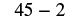 સફેદ પૃષ્ઠભૂમિ પર સાદા કાળા અક્ષરમાં ગણિતની પદાવલી 45 - 2 છે; તે બાદબાકીનો પ્રશ્ન દર્શાવે છે. |
| બાદબાકી કરો. |  સાદી સફેદ પૃષ્ઠભૂમિ પર સંખ્યા 43 કાળા અક્ષરમાં છે. |
 સફેદ પૃષ્ઠભૂમિ પર સ્પષ્ટ ઘેરા અક્ષરમાં ગણિતની પદાવલી 9x - 2 છે. |
|
ની જગ્યાએ મૂકો. સાદી સફેદ પૃષ્ઠભૂમિ પર લખાણ છે: xની જગ્યાએ 1 મૂકો. સંખ્યા 1 લાલ છે. |
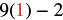 ચિત્રમાં ગણિતની પદાવલી 9(1) - 2 છે. સંખ્યા 1 લાલ છે; તે મૂકેલી કિંમત કે ગણતરીમાં ધ્યાન આપવાનું સ્થાન હોઈ શકે છે. |
| ગુણાકાર કરો. |  ગણિતની પદાવલી 9 - 2 સફેદ પૃષ્ઠભૂમિ પર કાળા અક્ષરમાં છે અને બાદબાકીનો પ્રશ્ન દર્શાવે છે. |
| બાદબાકી કરો. | સાદી સફેદ પૃષ્ઠભૂમિના નીચેના જમણા ખૂણામાં સંખ્યા 7 દેખાય છે. |
- ⓐ
- ⓑ
- ⓐ 13
- ⓑ 5
- ⓐ
- ⓑ
- ⓐ 8
- ⓑ 16
ઉકેલ
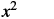 ચિત્રમાં ગણિતની પદાવલી x^2 છે. નાનો અક્ષર x છે અને સંખ્યા 2 ઉપર ઘાતાંક તરીકે છે; તે xનો વર્ગ દર્શાવે છે. |
|
ની જગ્યાએ મૂકો. ચિત્રમાં સૂચના છે: xની જગ્યાએ 10 મૂકો. સંખ્યા 10 લાલ છે અને બાકી લખાણ ઘેરા લીલાશ પડતા વાદળી રંગનું છે. |
 સંખ્યા 10 લાલ છે અને ઉપર ઘાતાંક 2 કાળો છે; તે 10નો વર્ગ અથવા 10ની 2જી ઘાત દર્શાવે છે. |
| ઘાતાંકની વ્યાખ્યાનો ઉપયોગ કરો. |  ગણિતની પદાવલી 10 . 10 છે; તે દસનો દસ વડે ગુણાકાર દર્શાવે છે, જે એકસો બરાબર છે. સંખ્યાઓ ઘાટી છે અને સફેદ પૃષ્ઠભૂમિની વચ્ચે છે. |
| ગુણાકાર કરો. | સફેદ પૃષ્ઠભૂમિ પર સંખ્યા 100 ઘાટા કાળા અક્ષરમાં છે. |
ઉકેલ
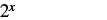 પદાવલી 2ની xમી ઘાત છે; x, આધાર 2ની જમણે ઉપર ઘાતાંક તરીકે છે. |
|
ની જગ્યાએ મૂકો. સફેદ પૃષ્ઠભૂમિ પર ઘેરા લીલાશ પડતા વાદળી અક્ષરમાં લખાણ છે: xની જગ્યાએ 5 મૂકો. સંખ્યા 5 લાલ છે. |
ગણિતની પદાવલી 2^5 છે. સંખ્યા 2 કાળી છે અને ઘાતાંક 5 અલગ લાલ રંગનો છે; તે 2ની 5મી ઘાત દર્શાવે છે. |
| ઘાતાંકની વ્યાખ્યાનો ઉપયોગ કરો. | 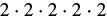 સંખ્યા 2 પાંચ અવયવ તરીકે આવે છે: 2 · 2 · 2 · 2 · 2. વચ્ચે ગુણાકારની ચાર નિશાની છે. ગુણનફળ 32 છે, એટલે 2ની 5મી ઘાત. |
| ગુણાકાર કરો. |  સંખ્યા 32 દર્શાવેલી છે. |
ઉકેલ
 સફેદ પૃષ્ઠભૂમિ પર ગણિતની પદાવલી 3x + 4y - 6 છે. |
|
ની જગ્યાએ અને ની જગ્યાએ મૂકો. ચિત્રમાં લખાણ છે: xની જગ્યાએ 10 અને yની જગ્યાએ 2 મૂકો. |
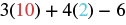 ગણિતની પદાવલી ત્રણ ગુણ્યા દસ, વત્તા ચાર ગુણ્યા બે, ઓછા છ એમ વંચાય છે. સંખ્યા 10 લાલ છે અને 2 આછા વાદળી રંગની છે. |
| ગુણાકાર કરો. | ગણિતની પદાવલીમાં સંખ્યાઓ 30, 8 અને 6 વત્તા અને ઓછાની નિશાનીઓથી જોડાયેલી છે: 30 + 8 - 6. |
| ડાબેથી જમણે સરવાળો અને બાદબાકી કરો. |  સાદી સફેદ પૃષ્ઠભૂમિ પર સંખ્યા 32 કાળા અક્ષરમાં છે. |
ઉકેલ
 દ્વિઘાત પદાવલી 2x² + 3x + 8 છે. પહેલું પદ 2 ગુણ્યા xનો વર્ગ છે. |
|
દરેક ની જગ્યાએ મૂકો. ચિત્રમાં લખાણ છે: દરેક xની જગ્યાએ 4 મૂકો. સંખ્યા 4 લાલ છે અને બાકી લખાણ ઘેરા વાદળી રાખોડી રંગનું છે. |
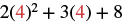 ચિત્ર પદાવલી 2x^2 + 3x + 8ની સંખ્યાત્મક કિંમત શોધવાનું દર્શાવે છે, જેમાં xની જગ્યાએ 4 મૂકેલો છે. સંખ્યા 4 બંને જગ્યાએ લાલ છે. |
| સરળ કરો: . |  ગુણનફળો અને એક સંખ્યાનો સરવાળો દર્શાવતી ગણિતની પદાવલી: 2 ગુણ્યા 16, વત્તા 3 ગુણ્યા 4, વત્તા 8. |
| ગુણાકાર કરો. | સફેદ પૃષ્ઠભૂમિ પર ઘેરા અક્ષરમાં ગણિતની પદાવલી 32 + 12 + 8 છે. દરેક સંખ્યા અને ક્રિયાનું પ્રતીક સ્પષ્ટ દેખાય છે અને સાદો સરવાળો બને છે. |
| સરવાળો કરો. |  સફેદ પૃષ્ઠભૂમિ પર સંખ્યા 52 કાળા, છેડા પર સેરિફ વગરના અક્ષરમાં છે. |
પદ, સહગુણક અને સજાતીય પદો ઓળખો
| પદ | સહગુણક |
|---|---|
| પદાવલી | પદો |
|---|---|
ઉકેલ
- આ પદો અને બંને અચળ પદો છે.
- આ પદો અને બંનેમાં છે
- આ પદો અને બંનેમાં છે
સજાતીય પદો
- ⓐ
- ⓑ
ઉકેલ
સજાતીય પદો ભેગાં કરીને પદાવલીઓ સરળ કરો
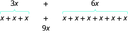
ચિત્રમાં પદાવલી 3 x વત્તા 6 x છે. આ પદ 3 x એટલે x વત્તા x વત્તા x. આ પદ 6 x એટલે x વત્તા x વત્તા x વત્તા x વત્તા x વત્તા x. પદાવલી 3 x વત્તા 6 x એટલે x વત્તા x વત્તા x વત્તા x વત્તા x વત્તા x વત્તા x વત્તા x વત્તા x. તેને સરળ કરતાં કુલ 9 x અથવા પદ 9 x મળે છે.
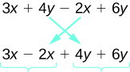
પહેલી પદાવલી 3x + 4y − 2x + 6y છે. વચ્ચેનાં +4y અને −2x પદોની જગ્યા બદલતાં 3x − 2x + 4y + 6y મળે છે. ઓછાની નિશાની 2x સાથે જ રહે છે. બંને પદાવલી સરળ કરતાં x + 10y મળે છે.
સજાતીય પદો ભેગાં કરો.
- સજાતીય પદો ઓળખો.
- સજાતીય પદો એકસાથે આવે તેમ પદાવલી ફરી ગોઠવો.
- સજાતીય પદોના સહગુણકોનો સરવાળો કરો.
ઉકેલ
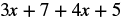 પદોનો સરવાળો દર્શાવતી ગણિતની પદાવલી: ત્રણ ગુણ્યા x, વત્તા સાત, વત્તા ચાર ગુણ્યા x, વત્તા પાંચ (3x + 7 + 4x + 5). સંખ્યાઓ અને ચલ x સફેદ પૃષ્ઠભૂમિ પર કાળાં છે. |
|
| સજાતીય પદો ઓળખો. |  બીજગણિતની પદાવલી 3x + 7 + 4x + 5 દર્શાવેલી છે. પદ 3x અને 4x લાલ છે, જ્યારે 7 અને 5 આછા વાદળી છે; તેમની વચ્ચેની વત્તાની નિશાનીઓ કાળી છે. |
| સજાતીય પદો એકસાથે આવે તેમ પદાવલી ફરી ગોઠવો. | બે ચલવાળાં પદો (3x અને 4x) અને બે અચળ પદો (7 અને 5)નો સરવાળો દર્શાવતી ગણિતની પદાવલી, જે 3x + 4x + 7 + 5 તરીકે લખેલી છે. |
| સજાતીય પદોના સહગુણકોનો સરવાળો કરો. | 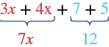 સજાતીય પદો ભેગાં કરીને બીજગણિતની પદાવલી સરળ થાય છે: 3x + 4x એટલે 7x અને 7 + 5 એટલે 12. અંતિમ સરળ સ્વરૂપ 7x + 12 છે. |
| મૂળ પદાવલી સરળ કરતાં મળે છે… |  ચિત્રમાં ગણિતની પદાવલી 7x + 12 સફેદ પૃષ્ઠભૂમિ પર સ્પષ્ટ ઘેરા અક્ષરમાં છે; તે બીજગણિતની રૈખિક દ્વિપદી દર્શાવે છે. |
ઉકેલ
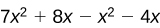 ચિત્રમાં ગણિતની પદાવલી 7x^2 + 8x - x^2 - 4x છે. આ બહુપદીમાં xના વર્ગ અને xવાળાં પદો છે. |
|
| સજાતીય પદો ઓળખો. | 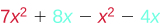 ગણિતની પદાવલી: 7x^2 + 8x - x^2 - 4x. અહીં x^2વાળાં પદો લાલ અને xવાળાં પદો વાદળી છે. પદાવલી સરળ કરતાં 6x^2 + 4x મળે છે. |
| સજાતીય પદો એકસાથે આવે તેમ પદાવલી ફરી ગોઠવો. | 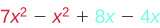 બીજગણિતનાં પદો દર્શાવતી ગણિતની પદાવલી: 7x^2 - x^2 + 8x - 4x. સરળીકરણ માટે સજાતીય પદો બતાવવા x^2વાળાં પદો લાલ અને xવાળાં પદો વાદળી રંગે દર્શાવ્યાં છે. |
| સજાતીય પદોના સહગુણકોનો સરવાળો કરો. | 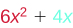 ચિત્રમાં ગણિતની પદાવલી 6x^2 + 4x છે; તેમાં 6x^2 લાલ અને 4x વાદળી છે, અને વચ્ચે કાળી વત્તાની નિશાની છે. |
શબ્દોને બીજગણિતની પદાવલીઓમાં ફેરવો
| ક્રિયા | શબ્દસમૂહ | પદાવલી |
|---|---|---|
| સરવાળો | વત્તા આ સંખ્યાઓનો સરવાળો: અને માં આટલો વધારો: જેટલો વધારો, મૂળ સંખ્યા: આ સંખ્યાઓનો કુલ સરવાળો: અને ઉમેરો, આમાં: |
|
| બાદબાકી | ઓછા આ સંખ્યાઓનો તફાવત: અને બાદ કરો, આમાંથી: માં આટલો ઘટાડો: જેટલો ઘટાડો, મૂળ સંખ્યા: |
|
| ગુણાકાર | ગુણ્યા આ સંખ્યાઓનું ગુણનફળ: અને |
, , , |
| ભાગાકાર | ભાગ્યા
આ સંખ્યાઓનું ભાગફળ: અને આ સંખ્યાઓનો ગુણોત્તર: અને વડે ભાગો આ સંખ્યાને: |
, , , |
- સરવાળો આ સંખ્યાઓનો: અને
- તફાવત આ સંખ્યાઓનો: અને
- ગુણનફળ આ સંખ્યાઓનું: અને
- ભાગફળ આ સંખ્યાઓનું: અને
- ⓐ આ સંખ્યાઓનો તફાવત: અને
- ⓑ આ સંખ્યાઓનું ભાગફળ: અને
ઉકેલ
- ⓐ આ સંખ્યાઓનો તફાવત: અને
- ⓑ આ સંખ્યાઓનું ભાગફળ: અને
- ⓐ 47 − 41
- ⓑ 5x ÷ 2
- ⓐ આ સંખ્યાઓનો સરવાળો: અને
- ⓑ આ સંખ્યાઓનું ગુણનફળ: અને
- ⓐ 17 + 19
- ⓑ 7x
- ⓐ આઠ જેટલો વધારો, મૂળ રાશિ:
- ⓑ સાત જેટલો ઘટાડો, મૂળ રાશિ:
ઉકેલ
- ⓐ અગિયાર જેટલો વધારો, મૂળ રાશિ:
- ⓑ ચૌદ જેટલો ઘટાડો, મૂળ રાશિ:
- ⓐ x + 11
- ⓑ 11a − 14
- ⓐ જેટલો વધારો આ સંખ્યામાં:
- ⓑ જેટલો ઘટાડો આ સંખ્યામાં:
- ⓐ j + 19
- ⓑ 2x − 21
- ⓐ આ સંખ્યાઓના સરવાળાના પાંચ ગણા: અને
- ⓑ આ રાશિઓનો સરવાળો: પાંચ ગુણ્યા અને
ઉકેલ
- ⓐ આ સંખ્યાઓના સરવાળાના ચાર ગણા: અને
- ⓑ આ રાશિઓનો સરવાળો: ચાર ગુણ્યા અને
- ⓐ 4(p + q)
- ⓐ 4p + q
- ⓐ આ રાશિઓનો તફાવત: બે ગુણ્યા
- ⓑ આ સંખ્યાઓના તફાવતના બે ગણા:
- ⓐ 2x − 8
- ⓑ 2(x − 8)
ઉકેલ
| ઊંચાઈ વિશે શબ્દસમૂહ લખો. | જેટલો ઘટાડો, મૂળ રાશિ પહોળાઈ |
| આ અક્ષર મૂકો: પહોળાઈની જગ્યાએ. | જેટલો ઘટાડો, મૂળ રાશિ: |
| “કરતાં ઓછું”ને “આમાંથી બાદ કરો” તરીકે ફરી લખો. | બાદ કરો, આમાંથી: |
| શબ્દસમૂહને બીજગણિતની લખાવટમાં ફેરવો. |
ઉકેલ
| ડાઇમની સંખ્યા વિશે શબ્દસમૂહ લખો. | ક્વાર્ટરની સંખ્યાના પાંચ ગણામાંથી બે ઓછા |
| આ અક્ષર મૂકો: ક્વાર્ટરની સંખ્યાની જગ્યાએ. | જેટલો ઘટાડો, મૂળ રાશિ: પાંચ ગુણ્યા |
| બીજગણિતમાં ફેરવો: ગુણ્યા . | જેટલો ઘટાડો, મૂળ રાશિ: |
| શબ્દસમૂહને બીજગણિતની લખાવટમાં ફેરવો. |
વધારાનાં ઑનલાઇન સંસાધનો જુઓ
મુખ્ય સંકલ્પનાઓ
- સજાતીય પદો ભેગાં કરો.
- સજાતીય પદો ઓળખો.
- સજાતીય પદો એકસાથે આવે તેમ પદાવલી ફરી ગોઠવો.
- સજાતીય પદોના સહગુણકોનો સરવાળો કરો.
અભ્યાસથી નિપુણતા
રોજિંદા જીવનમાં ગણિત
લેખન અભ્યાસ
સ્વમૂલ્યાંકન
| હું આ કરી શકું છું… | વિશ્વાસપૂર્વક | થોડી મદદથી | ના—મને સમજાતું નથી! |
|---|---|---|---|
| બીજગણિતની પદાવલીઓની કિંમત શોધવી. | |||
| પદ, સહગુણક અને સજાતીય પદો ઓળખવાં. | |||
| સજાતીય પદો ભેગાં કરીને પદાવલીઓ સરળ કરવી. | |||
| શબ્દસમૂહોને બીજગણિતની પદાવલીઓમાં ફેરવવાં. |
બીજગણિતની કુશળતા અંગે સ્વમૂલ્યાંકનનું કોષ્ટક. સ્તંભનાં નામ છે: હું આ કરી શકું છું…, વિશ્વાસપૂર્વક, થોડી મદદથી અને ના—મને સમજાતું નથી! કુશળતામાં પદાવલીની કિંમત શોધવી, પદો ઓળખવાં, સરળ કરવું અને શબ્દસમૂહોને પદાવલીમાં ફેરવવાં સામેલ છે.